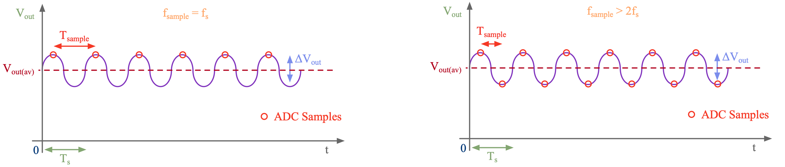
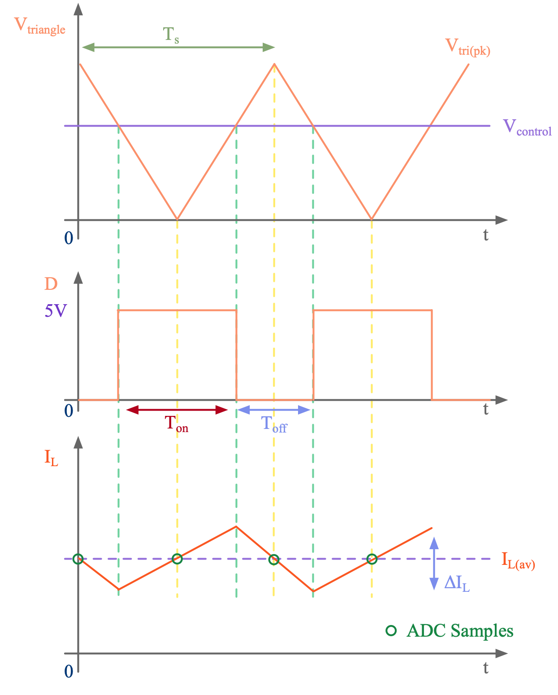
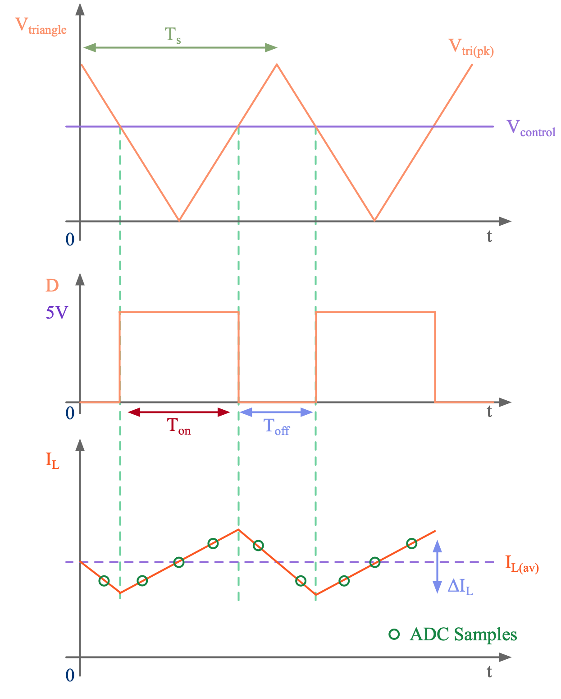
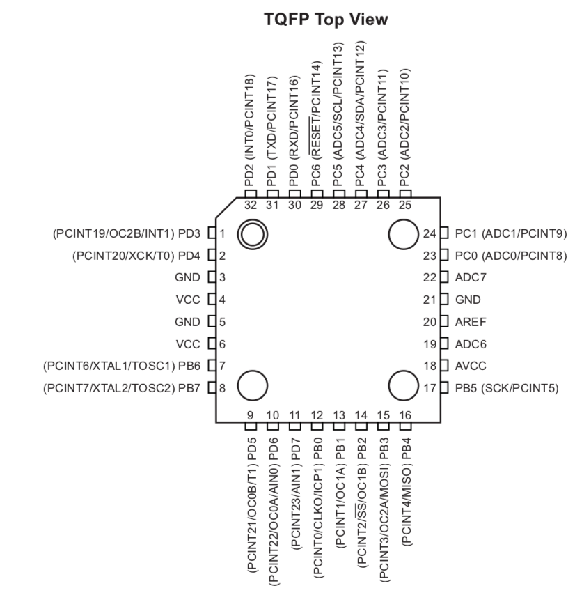
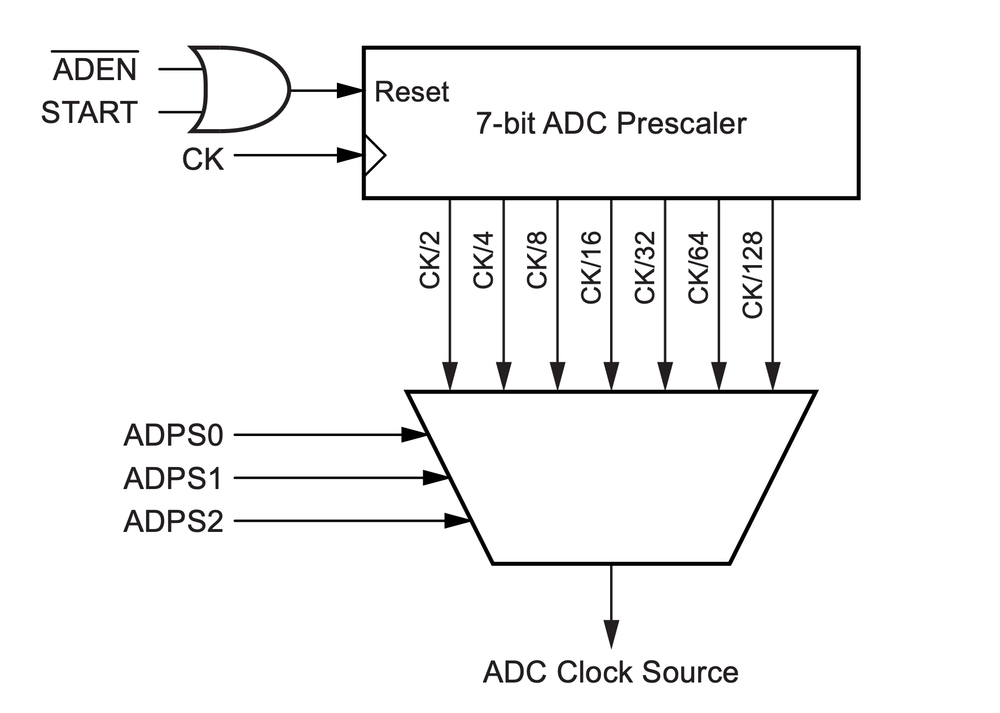

class: title-slide count: false .logo-title[] ## ELECTENG 311 # Electronics Systems Design ### Voltage Measurement .TitleAuthor[Duleepa J Thrimawithana] --- layout: true name: template_slide .logo-slide[] .footer[[Duleepa J Thrimawithana](https://www.linkedin.com/in/duleepajt), Department of Electrical, Computer and Software Engineering (2022)] --- name: S1 # Learning Objectives - Analog circuitry needed to measure output voltage - Why do we need ADCs? - What is an antialiasing filter? - ADC types - How does a SAR ADC work? - How do we characterize ADCs? - Learning to configure the ADC in the ATmega328P - Learning to develop code to use the ADC in the ATmega328P --- class: title-slide layout: false count: false .logo-title[] # Measuring Output Voltage ### Analog Circuitry Required --- layout: true name: template_slide .logo-slide[] .footer[[Duleepa J Thrimawithana](https://www.linkedin.com/in/duleepajt), Department of Electrical, Computer and Software Engineering (2022)] --- name: S2 # Output Voltage Measurement .center[<img src="img/PIControlConcept.png" height="200">] - To implement the digital PI controller a measurement of output voltage is needed to compare against the reference provided by the user - ADC peripheral of the MCU is used to convert the output voltage measurement - The measurable voltage range of the ADC is from 0V to V<sub>ref</sub>, which is 5V for this design - The output voltage needs to be stepped down to below 5V - A voltage divider can be used with an anti-aliasing filter --- name: S3 # Implementation of Voltage Measurement .center[] - Voltage divider formed by R<sub>a</sub> and R<sub>b</sub> steps output voltage down to below 5V - C<sub>of</sub> with the Thevenin equivalent of R<sub>a</sub> and R<sub>b</sub> setup a 1st order low-pass filter - Select the cut-off frequency to be below switching frequency and to stop aliasing --- name: S4 # Selecting Component Values - R<sub>a</sub> and R<sub>b</sub> needs to be selected to step-down the maximum V<sub>out</sub> to below 5V \\[ V'\_{out} = V\_{out} \frac {R\_b} {R\_a + R\_b} \quad \Rightarrow \quad V\_{out\_{(max)}} \frac {R\_b} {R\_a + R\_b} \leq 5\\] - Ensure the power dissipation in R<sub>a</sub> and R<sub>b</sub> are minimised \\[ P\_{V\_{meas}} = \frac {V^2\_{out}} {R\_a + R\_b} \\] - Anti-aliasing filter should have a cut-off frequency lower than ADC sampling frequency, f<sub>sample</sub> \\[ f\_{sample} \geq \frac {0.5} {R\_{th} C\_{of}} \quad \text{where} \quad R\_{th} = \frac {R\_a R\_b} {R\_a + R\_b} \\] --- name: S5 # Aliasing .center[] - If the sampling frequency, f<sub>sample</sub> is less than 2f<sub>s</sub> (i.e., Nyquist Sampling Theory) then an accurate digital representation of the waveform cannot be obtained - As an example, if f<sub>sample</sub> = f<sub>s</sub>, as in the figure above (left), we may see a DC offset in the measured V<sub>out</sub> \\[ V\_{out} = V\_{out} + \Delta V\_{out}/2 \\] - If f<sub>sample</sub> > 2f<sub>s</sub>, as in figure above (right), we can reconstruct V<sub>out(av)</sub>, by digital filtering the ADC samples --- name: S6 # Synchronous Sampling .left-column[ .center[<img src="img/Buck.png" height="130">] - ADC sampling can be synchronized with the PWM timer to sample the average of a waveform without needing to filter - As an example consider the Buck converter above operating in continuous conduction mode - When using symmetric PWM, the inductor current can be sampled at the MAX and MIN - Naturally these samples will correspond to the average inductor current as shown ] .right-column[  ] --- name: S7 # Oversampling .left-column[ .center[<img src="img/Buck.png" height="130">] - ADC sampling can be at a much higher rate than Nyquist rate - As an example consider the Buck converter above operating in continuous conduction mode - Current waveform is sampled at a rate much faster than 2f<sub>s</sub> - Can be challenging if f<sub>s</sub> is high - If interested in average current, need to digitally process the samples ] .right-column[  ] --- class: title-slide layout: false count: false .logo-title[] # Analog to Digital Converters ### Fundamentals Principles --- layout: true name: template_slide .logo-slide[] .footer[[Duleepa J Thrimawithana](https://www.linkedin.com/in/duleepajt), Department of Electrical, Computer and Software Engineering (2020)] --- name: S8 # ADC Types - There are multiple types of ADCs, each focusing on different characteristics - For example faster sampling rate, higher resolution, larger dynamic range, temperature stability, lower error, lower cost, etc. - The most common types include delta-sigma ADC, successive approximation register (SAR) ADC and pipeline ADC - Microcontrollers predominantly employ successive approximation register (SAR) ADC - They have a relatively low part count which keeps cost and size low - They have low power consumption - They have an adjustable resolution, and generally have mid-range resolution - They are generally mid-range for conversion speed - The ATmega328P/PB has an SAR ADC --- name: S9 # ADC Comparison .center[<img src="img/ADCComp.png" height="400">] .credits[ .center[Taken from [[1]](https://www.analog.com/media/en/analog-dialogue/volume-39/number-2/articles/the-right-adc-architecture.pdf)] ] --- name: S10 # The Conversion Process - We know that an analog signal is continuous in both time and amplitude, whereas a digital signal is not - Therefore, the analog signal needs to be digitized/discretized - A process known as sampling is used to convert the analog signal into discrete time steps - A process known as quantization is used to convert the analog into discrete amplitudes - The analog to digital conversion process introduce error - For example during quantization information is lost .center[<img src="img/ADCProcess.png" height="180">] --- name: S11 # The Sampling Process (PI) - We want to take samples of the analog signal at discrete points in time - This is because the quantization process takes time as it is not an instantaneous process - During the quantization process we need to keep the signal being converted constant - This is achieved by using a sample and hold circuit to capture a “snapshot” of the analog signal and store it until the quantization process is completed - The characteristics of the sample and hold circuit are important when designing the analog circuitry that produce the input signal to the ADC - Ideally the input to the ADC should be coming from a low impedance source .center[] --- name: S12 # The Sampling Process (PII) - At the start of the conversion the capacitor is connected to the input signal by closing the switch in order to charged it to the input voltage - The length of time the capacitor is charging for is the acquisition time - Once charged the capacitor is disconnected by turning the switch off - The quantization is done on the capacitor voltage - Any changes in the input signal does not impact the quantization process as switch is off - The length of time taken for this quantization process is the conversion time - After completing an ADC conversion a new sample is taken and the process repeats .center[] --- name: S13 # The Quantization Process - The full voltage range is broken into discrete intervals - The number of number of bits available in an ADC to represent the amplitude of a signal determine the number of discrete voltage intervals, as the number of intervals is equal to 2<sup>bits</sup> - As an example, lets consider an ADC with a full voltage range of 5V and examine how it will represent a 3.2V analog signal if this ADC had 1-bit, 2-bits and 3-bits to represent an analog signal .center[] --- name: S14 # SAR Conversion - The sample of the analog signal is converted to a digital number over a series of ADC clock cycles - Hence the name “successive approximation”, an algorithm that dates back to the 1500s - At each cycle, the sample of the analog signal is compared to an internally generated voltage that is half the remaining amplitude interval (starts with half the value of V<sub>ref</sub>) - If sample higher than internal voltage, output bit of this cycle is set to 1, otherwise 0 - As an example lets see how an ADC with a V<sub>ref</sub> of 2.56V converts a 1.89V sample .center[] --- name: S15 # SAR Conversion in Tabular Format - Lets examine how an 8-bit SAR ADC that has a 2.56V V<sub>ref</sub> converts a sample of an analog signal that has an amplitude of 1.89V. - Has 256 amplitude intervals and the step size is 10mv (i.e. 2.56/256) - Result of the conversion is 10111101b (i.e. 189) which equates to 189mV (i.e. 189 x 10mV) .center[] --- name: S16 # Acquisition Time & Conversion Time - The acquisition time must be long enough to allow the sample and hold capacitor to charge - This is dependent on the source impedance (R<sub>signal</sub>) of the signal being measured - The capacitor is fully charged after approximately 5 time constants (τ) \\[ \tau = (R\_{signal} + R\_{sample}) C\_{sample} \\] - The conversion time is dependent on the resolution and the cycle time - One cycle is required per bit of resolution - Shorter cycle times will result in faster conversions, but the minimum cycle time will be limited by the ADC hardware capability, as well as the clock speed of the MCU - As the ADC interacts with the microprocessor inside the MCU its clock cycles must be aligned - The ADC is almost always clocked by the same clock as the microprocessor, or a scaled derivative - The ADC unit of the ATmega328P requires a clock frequency between 50kHz and 200kHz (operating outside of this range impacts the ADC accuracy) --- name: S17 # Multiple ADC Channels - When using an MCU, often more than one analog signal needs to be converted - Rather than having multiple ADC units connected to a single pin each, a single ADC unit is often used - The pins are connected to the ADC unit via a multiplexer - The inputs are called “ADC channels” - Because signals are multiplexed, samples taken from each signal will not be at the same point in time - If 2 signals need converting, a sample of the 2nd signal can only be taken after converting the 1st - Some MCUs have 2 or more ADC units to allow simultaneous sampling of 2 or more signals .center[] --- name: S18 # Characteristics of an ADC (PI) - Acquisition time - How long it takes for the ADC hardware to acquire a sample of the analog signal - This includes switching multiplexers, charging internal capacitors, waiting for transients to settle, etc. - Conversion time - Time taken by the ADC to convert the sample of the analog signal into a digital number - Total sampling time - This is the total time taken to make a single ADC reading and is therefore the sum of both the acquisition time and conversion time - The maximum sampling rate/frequency is limited by the minimum total sampling time \\[ f\_{sample(max)} = \frac{1}{t\_{acquisition(min)} + t\_{conversion(min)}} \\] - We will learn more about the acquisition process and the conversion process soon --- name: S19 # Characteristics of an ADC (PII) - Resolution (bits) - This is determined by the number of bits available in the ADC to represent the signal - For example, an ADC that has a 8-bit resolution got 2<sup>8</sup> amplitude intervals - Supply voltage (AV<sub>CC</sub>) - This is the voltage that is needed to power the internal circuitry of an ADC (e.g. 5V) - Reference voltage (V<sub>ref</sub>) - This specifies the voltage which the input signal is compared to (e.g. 5V) and therefore signals larger than the reference voltage cannot be accurately converted - Step size (V<sub>step</sub>) - This is the smallest signal that can be determined by the ADC and is a function of both the resolution and the reference voltage \\[ V\_{step} = \frac{V\_{ref}}{2^{resolution}} \\] --- name: S20 # Example: Sampling Rate and Resolution .questions[ An ADC is used to convert an analog signal that is between 0V and 3V to a digital signal. This ADC has a minimum acquisition time of 140ns, and a minimum conversion time of 360ns. - What is the maximum sampling rate for the ADC? - What is the maximum frequency that can be present in a signal such that the ADC could still accurately measure the signal? - What should be the minimum reference voltage that could be used in this design? - What should be the minimum supply voltage this ADC should be specified to? - If the ADC should be capable of measuring down to a 10mV signal, what should be the minimum resolution of the ADC? Assume the ADC uses the minimum reference voltage needed for this design. ] --- class: title-slide layout: false count: false .logo-title[] # The ADC on ATmega328P ### Configuring and Using --- layout: true name: template_slide .logo-slide[] .footer[[Duleepa J Thrimawithana](https://www.linkedin.com/in/duleepajt), Department of Electrical, Computer and Software Engineering (2020)] --- name: S20 # ATmega328P ADC Peripheral - 10-bit resolution - 65us – 260us conversion time - Up to 15k samples per second at full resolution - 0V to VCC input voltage range - Three options for reference voltage - Internal 1.1V reference voltage - ADC supply voltage (AV<sub>CC</sub>) - Externally generated reference voltage - 8 multiplexed channels - Single conversion or continuous conversion modes - Interrupt on conversion completion - ±2 LSB absolute accuracy --- name: S21 # ATmega328P ADC Pins - In the ATmega328P there are 8 ADC pins (PC0 to PC5 together with ADC6 and ADC7) - By default these pins are configured as analog inputs (this is not always the case) - Though AIN0 and AIN1 also accept analog inputs they are used for the comparator .center[] --- name: S22 # ATmega328P ADC Implementation .center[] --- name: S23 # ATmega328P ADC Registers - The ATmega328P only has one ADC and this is named ADC - The 8 ADC channels (ADC0 to ADC7) are multiplexed - There are 5 registers associated with the ADC <table class="tg" style="undefined;table-layout: fixed; width: 600px; margin-left:auto; margin-right:auto;"> <colgroup> <col style="width: 200px"> <col style="width: 400px"> </colgroup> <thead> <tr> <th class="tg-dzaw"><span style="color:white">Register</span></th> <th class="tg-dzaw"><span style="color:white">Functionality</span></th> </tr> </thead> <tbody> <tr> <td class="tg-jayl">ADMUX</td> <td class="tg-jayl">ADC Multiplexer Selection Register</td> </tr> <tr> <td class="tg-sabo">ADCSRA</td> <td class="tg-sabo">ADC Control and Status Register A</td> </tr> <tr> <td class="tg-jayl">ADCSRB</td> <td class="tg-jayl">ADC Control and Status Register B</td> </tr> <tr> <td class="tg-sabo">DIDR0</td> <td class="tg-sabo">Digital Input Disable Register</td> </tr> <tr> <td class="tg-jayl">ADCH & ADCL</td> <td class="tg-jayl">ADC Data Registers</td> </tr> </tbody> </table> - ADMUX allows selecting the channel to convert and the ADC data registers contain the conversion result - The remaining three registers are used to control the peripheral - Some fields are set by the user to control the operation - Some fields are set by the ADC to indicate its current state --- name: S24 # ADMUX Register .center[] - REFS[1..0]: *Reference Selection* where 00 = AREF, 01 = AVCC, 10 = Reserved, 11 = Internal 1.1V - .color-grey[ADLAR: *Left Adjust Result*] - MUX[3..0]: *Channel Selection* .center[] --- name: S25 # ADCSRA Register .center[<img src="img/ADCSRA.png" width="600">] - ADEN: *ADC Enable* - ADSC: *Start Conversion* bit needs to be set to start each conversion in single conversion mode while in free running mode this bit only needs to be set for the first conversion - ADATE: *Auto Trigger Enable* allows starting an ADC conversion using a trigger signal - ADIF: *Interrupt Flag* is set after completing a conversion and cleared when executing the corresponding interrupt - ADIE: *Interrupt Enable* - ADPS[2..0]: *Prescaler Select* where 000 = 2, 001 = 2, 010 = 4, 011 = 8, 100 = 16, 101 = 32, 110 = 64, 111 = 128 --- name: S26 # ADCSRB Register .center[] - .color-grey[ACME: *Analog Comparator Multiplexer Enable*] - ADTS[2..0]: *Auto Trigger Source* when ADATE bit is set, these bits selects which source will initiate an ADC conversion .center[] --- name: S27 # DIDR0 Register .center[] - ADCxD: *Digital Input Disable* when ADC0-ADC5 pins are used as analog inputs the digital input buffer on the corresponding pin can be disabled by setting the ADCxD bit to save power (ADC6 & ADC7 do not have buffers) --- name: S28 # ADCL and ADCH Registers .center[] - ADC[9..0]: *ADC Result* registers are updated at the end of each conversion and to obtain the results (when ADLAR is cleared) read ADCL followed by ADCH (alternatively you can directly read the register ADC and assign it to a 16-bit variable) --- name: S29 # ADC Timing Diagram .center[] - The input signal is sampled 1.5 cycles after the conversion is started in normal conversion mode - In auto triggered mode sample and hold takes 2 cycles - The digitization of the sampled signal takes 11.5 cycles - The total conversion takes 13 cycles in normal conversion mode and 13.5 cycles in auto triggered conversion mode --- name: S29 # ADC Clock .right-column[  ] .left-column[ - The ATmega328P datasheet recommend choosing an ADC clock frequency between 50kHz and 200kHz - Since the system clock frequency is 16MHz, we have a choice between a prescaler of 64 or 128 - A prescaler of 64 result in an ADC clock of 250kHz while 128 results in 125kHz - In the lecture examples, we will use a prescaler of 64 - Though a 250kHz ADC clock frequency is slightly above the recommended, we should be able to achieve good accuracy - You may experiment with higher ADC clock frequencies to strike a balance between accuracy and sampling speed - A capacitor across ADC pin can improve settling time ] --- name: S30 # Configuring the ADC - First we need to configure the ADC as per our needs - Need to set the bits of the [ADMUX](#S24), [ADCSRA](#S25), [ADCSRB](#S26) and [DIDR0](#S27) registers - As an example, we will configure the ADC to operate in auto trigger mode with TC0 overflow as source - We will sample ADC0 pin and use TC0 setup from previous lecture (i.e., an overflow every 10μs) - During an ADC conversion, which takes 54μs, auto trigger will be disabled - An ADC conversion will be auto triggered during overflow event following a conversion complete .codes[ ```c //This function configures the ADC to use AVCC as reference and read ADC0 in auto trigger mode void adc_init(void){ ADMUX |= 1 << REFS0; //AVCC set as reference, ADC0 selected and results are right adjusted ADCSRA |= (1 << ADEN) | (1 << ADSC) | (1 << ADATE) | (0b110 << ADPS0); //Enable ADC, start conversion, setup auto-trigger and set prescaler to 64 ADCSRB |= (0b100 << ADTS0); //Use TC0 overflow as auto- trigger source DIDR0 = 1 << ADC0D; //ADC0 buffer disabled } ``` ] --- name: S31 # Performing a Conversion - The ADCL & ADCH registers store the conversion results - Since the ADC is already configured in the aut trigger mode, it takes a new ADC sample at every qualifying overflow event - Wait for the conversion to finish by polling the ADIF bit and read result from ADCL & ADCH - Reset the ADIF and TOV0 flags so it is ready to take next ADC sample .codes[ ```c //This function reads an ADC channel and return results uint16_t adc_read_channel_pool(void){ while ((ADCSRA & (1 << ADIF)) == 0) { //ADIF bit is checked to see if it is 0 ; //If ADIF bit is not 1, wait until it becomes 1 } ADCSRA |= 1 << ADIF; //Clear the ADIF flag TIFR0 |= 1 << TOV0; //Clear the TC0 overflow flag return ADC; //Returning the ADC value } ``` ] --- name: S32 # Completing the ADC Code - PB5 is toggled after every conversion to verify ADC sampling is synchronized with PWM signal on PD5 - Timing between ADC samples will be just over 54μs as conversion waits for next overflow event .codes[ ```c #include "common.h" #include "timer0.h" #include "adc.h" #include <avr/io.h> #include <stdint.h> volatile static uint16_t ADC_VALUE = 0; int main(void){ tc0_init_FPWM_100k(); //Initializing TC0 to generate a 100kHz 50% D PWM adc_init(); //Initializing ADC with auto trigger mode PIN_OUT(PINB5); //Set PB5 as output while (1){ ADC_VALUE = adc_read_channel_pool(); PIN_TOGGLE(PINB5); } } ``` ] --- name: S33 # Errors During ADC Conversion - So far we considered an ideal ADC - In reality the ADC conversion results has offset error, gain error, quantization error, integral non-linearity and differential non-linearity - The absolute accuracy is the sum of the error - It is measured in Least-Significant-Bits (LSB) - Given that one LSB is equal one step size, we can determine how many volts the converted reading might differ from the actual value \\[ V\_{\text{Absolute Error}} = V\_{\text{step}} \times LSB\_{\text{Absolute Error}} \\] \\[ V\_{\text{ADC}} - V\_{\text{Absolute Error}} \leqslant V\_{\text{Actual}} \leqslant V\_{\text{ADC}} + V\_{\text{Absolute Error}} \\] --- class: title-slide layout: false count: false .logo-title[] # Questions?